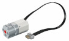
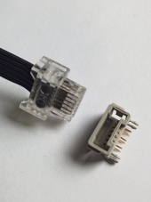
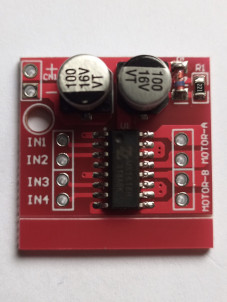
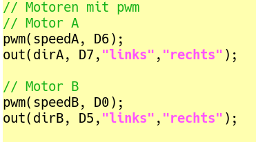

Lego Motoren sind schon ein ganz besonderes Kapitel. Die Vielfalt ist nahezu unüberschaubar. Es gibt eine ganz hervorragende Seite, die Übersicht verschafft!
Lego Motoren. Der Autor (danke Philo!) listet die Motoren übersichtlich auf, dazu gibt es zahlreiche technische Details.
... und hier gibt es sogar eine deutsche Übersetzung dazu:
Lego Motoren (auf deutsch)
Ich verwende im Moment (für Leuchtturm, Achterbahn und Karussell) den "einfachen mittleren Linearmotor" (45303) mit dem LPF2 Anschluss.

Die meisten Motoren - dieser auch - benötigen eine Spannung von 9 V. Die Spannungsversorgung ist meist unkritisch, nach oben hin sollte man vielleicht etwas vorsichtig sein, nach unten (5-6V) meist gar kein Problem.
Die Anschlüsse beim "Powered UP"
Schon etwas eigenartig, diese Lego-Kabel. Eigenwillig auch die Belegung. Zum Glück hilft auch hier
Philo weiter. 
Um möglichst wenig zu zerstören habe ich mir solche "Stecker" besorgt. Da kann man dann die Lego-Kabel anschließen. Anlöten muss man dann nur noch Pin 1 und 2 und passend verbinden.
Die Verbindung zum esp8266 stellen wir dann mit einem "Motor-Shield" L298N her. Gibt es in zahlreichne Varianten, einfach nach L298N, Motortreiber oder motor-shield suchen.

Verdrahtung L298N <---> esp8266
Vom esp8266 bekommen wir für die Motorsteuerung PWM-Signale, das sind Signale, mit denen man die Geschwindigkeit des Motors regeln kann. Außerdem kann die Drehrichtung (links/rechts) eingestellt werden. Mit dem L298N kann man 2 Motoren steuern:
Anschlüsse:
+ an 9V (Die Motorspannung)
- an - bzw. GND (am besten mit GND vom esp8266 verbinden)
IN1 - IN4 mit den zugehörigen Anschlüssen auf dem esp verbinden (wie im Beispiel -->>). Motor-A, Motor-B an die passenden Anschlüsse des jeweiligen Motors.
Hier dann noch die Konfiguration für die Motoren für das setup.cpp

Wie man sehen kann:
Motor A Geschwindigkeit (0-1023) an D6, Richtung (links/rechts) an D7,
Motor B an D0 und D5.
Verbinden mit IN1, IN2 für Motor A und IN3, IN4 für Motor B.